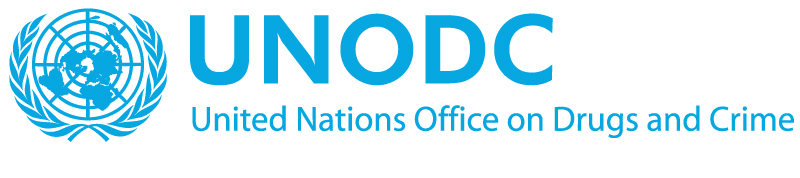
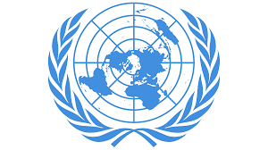

UNITED NATIONS OFFICE ON DRUGS AND CRIME · SPARK
Advanced Anti-Corruption: Prevention of Corruption
Certificate of completion for the eLearning course on anti-corruption prevention.
26 OCTOBER 2026Open certificate PDF ↗CERTIFICATES & TRAINING
Specialised learning in anti-corruption prevention and transparency under the international arms trade framework. Original certificate PDFs are included in this website folder.

UNITED NATIONS OFFICE ON DRUGS AND CRIME · SPARK
Certificate of completion for the eLearning course on anti-corruption prevention.
26 OCTOBER 2026Open certificate PDF ↗
UNITED NATIONS INSTITUTE FOR TRAINING AND RESEARCH · EUROPEAN UNION
Certificate of completion for training on the Arms Trade Treaty’s annual reporting process.
26 OCTOBER 2026Open certificate PDF ↗